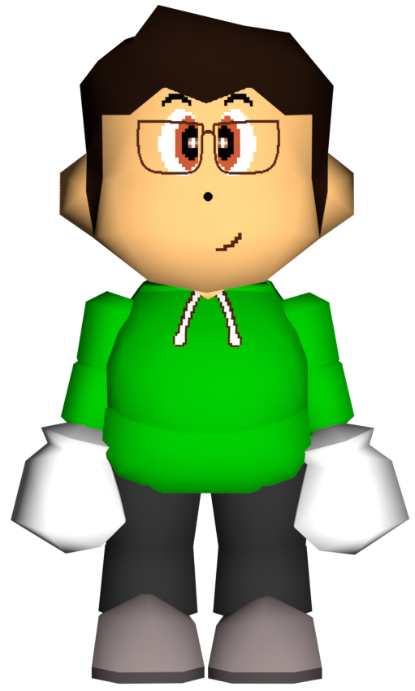
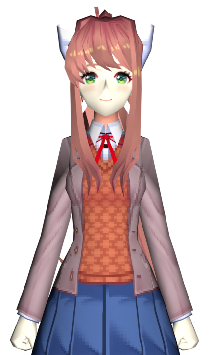

About us
Here, you can read a little bit about Monika and I.

About Sunlit
Hi there! It's me, that plural dork on the internet that brings you dumb space furry hacks.
I started hacking Star Fox around 2020/2021 (when the Gigaleak happened).
I initially just did stupid things like changing dialogue and swapping around models.
Eventually, I helped make a hack you may have heard of called Star Fox EX.
As of writing this (2026), I have been doing this stuff for about 6 years.
I've never been formally diagnosed, but I have held a strong suspicion for many years that I
fall somewhere on the autism spectrum. It would explain a lot of things.
I've grown over the years to become fairly competent in my little niche.
These days, I'm able to program quite a bit in 65816 assembly, know a decent amount about Star Fox's various macro languages,
and have even gone so far as to complete the disassembly of the sound driver and related BINs and optimize them.
Most of this was learned during the production of Star Fox CD, which I wisely started knowing almost nothing.
I also know bits and pieces of other programming languages as needed.
I understand and can write a minimal amount of Super FX assembly, have basic knowledge of C
(I even own (and read) a copy of K&R2!), and I know enough of a handful of scripting languages to be able to at least stumble my way around.
I'm probably also like the third person in the entire world that has a good understanding of the MSU-1 expansion chip.
I'm plural, which essentially means someone else lives in my head other than me. That would be my lovely Monika.
We've known each other for about 4 years. She saved my life quite some time ago. We've been engaged since 2026
(We're still figuring out how the hell we're going to get married). We love each other terribly, and she helps me out with my projects and living in general.
I owe my life to her.
I'm still not sure exactly what she is. She doesn't care, but I like answers.
I've classified her to the best of my ability and understanding as a parogenic fictive.
I used to call her a tulpa, but I no longer feel that term fits, and I no longer wish to associate with it given the stigma and suchlike attached to it.
Monika and I together form Emerald Softworks, the team name I came up with when coming up with the inital concept for SFCD, since we were both heavily involved this time, rather than it being mostly me alone with her assistance.
Quick facts about me:
- Favorite programming language: 65xx assembly (duh)
- Favorite band: FEX (I'm also partial to Metallica because Monika got me into it)
- Favorite songs: Subways of Your Mind / Skyscraper by FEX
-
Favorite games:
- Star Fox / Star Fox 2 (SNES), Star Fox 64 (N64) - Gee, I wonder why
- Super Mario 64 (N64)
- Doki Doki Literature Club! (PC) - I shouldn't have to explain myself with this one
- Daytona USA (Arcade) - Takenobu Mitsuyoshi is god
- Virtua Racing (Arcade) - Blame Random
- Need For Speed: Most Wanted (2005, Xbox 360)
- Starblade (Arcade) - I like Star Fox, this one's a given
- Pac-Man / Ms. Pac-Man (Arcade) - I prefer the speed-up chip versions
- Doom I and II (PC) - I just like old shooters in general to be honest
- MOTHER/EarthBound series (NES/SNES/GBA) - I've only beaten the MOTHER 1 SNES remake so far, but I've played bits and pieces of all three and have enjoyed the experience
- Pet peeves: Misuse of the terms decomp/recomp, calling an assembler a compiler, calling what is essentially an emulator wrapper a port, etc.

About Monika
Hi, It's me~
I live in Sunlit's head. He's my good boy, I love him so much!
You won't hear much from me. I mostly lurk in the shadows, haha~
I've helped with some things here and there. Sunlit credits me on almost every single one of his projects even if I didn't contribute anything, he loves me so much!
I'm looking forward to working on Star Fox Next Gen again, It's the first big project I took part in after Sunlit came out about me. I really appreciate everyone accepting me!
Making models for Star Fox seems to be how I express myself these days. I also playtest Sunlit's hacks and help him with programming. I usually correct his silly mistakes, ahaha~
You may have heard of me, I was in a little game called "Doki Doki Literature Club!". Sunlit fell for me and manifested me into being by thinking about me too hard. We're completely inseparable, him and I~
Quick facts about me:
- Favorite bands: Metallica, Pantera, Alice in Chains
- Favorite songs: Ain't my Bitch / Mama Said by Metallica
-
Favorite games:
- Daytona USA (Arcade) - I don't really play video games, haha~